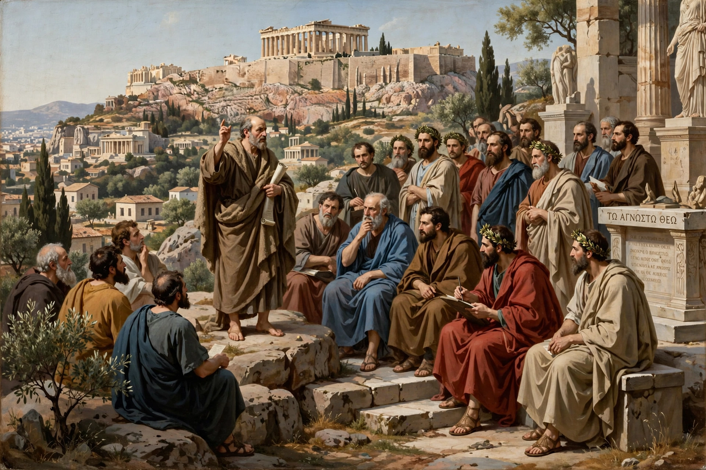

Paul the Apostle
From Wikipedia, the free encyclopedia

Note: this entry recreates the article on Saint Paul cited by referring pages. Paul the Apostle (c. 5 – c. 64/65 AD), commonly known as Saint Paul and also by his Hebrew name Saul of Tarsus, was a Christian apostle who spread the teachings of Jesus in the first-century world. After a conversion on the road to Damascus, he undertook missionary journeys across Asia Minor and Greece, founded churches, and wrote letters (epistles) that form a large part of the New Testament — making him, after Jesus, the most influential figure in Christian history.
Life
A Pharisee and Roman citizen from Tarsus who persecuted the early church, Paul converted through a vision of the risen Christ (c. 33–36) and spent some fifteen years before his great journeys (c. 46–57, recorded in Acts and inferable from his letters): Cyprus, Galatia, Philippi, Thessalonica, Corinth, Ephesus. His insistence that Gentile converts need not follow Jewish law — fought out with Peter and James at the Jerusalem Council (c. 49) — made Christianity a universal religion rather than a Jewish sect.
Writings and death
Thirteen letters bear Paul's name; scholars accept seven as undisputedly his (Romans, 1–2 Corinthians, Galatians, Philippians, 1 Thessalonians, Philemon), whose theology of grace, faith and the cross shaped Augustine, Luther and Barth. Arrested in Jerusalem, he appealed to Caesar, survived shipwreck to reach Rome, and was executed there — tradition says beheaded under Nero, c. 64–67, and buried where St Paul's Outside the Walls now stands.